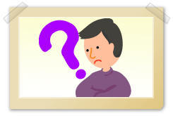

介護保険制度は、平成12年4月に介護を必要とする状態となってもできる限り自立した日常生活を営み、人生の最後まで人間としての尊厳を全うできるよう、介護を必要とする人を社会全体で支える仕組みです。
利用者は自らの選択に基づいてサービスを利用することができ、介護に関する福祉サービスと保健医療サービスが総合的・一体的に提供され、公的機関のほか、株式会社やNPOなど多様な事業者の参入促進が図られ、効率的にサービスが提供される仕組みとなりました。
ここでは、介護保険制度の概要を紹介いたします。
なお、認知症高齢者が介護保険を利用する場合、申請やサービスの選定などの全ての手続きを本人が一人で行うことは困難です。常に家族や親族、代理人である第三者がサポートする必要があります。その際は、本人の立場を尊重し、認知症高齢者の代弁者として支援することが重要です。 |